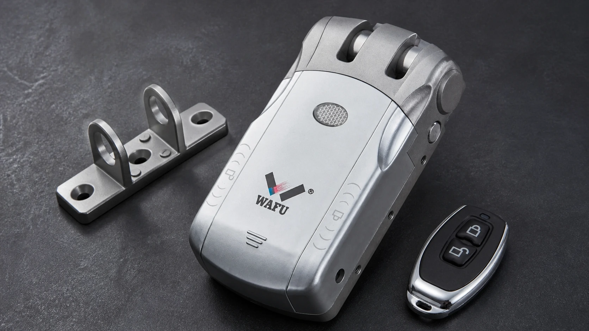
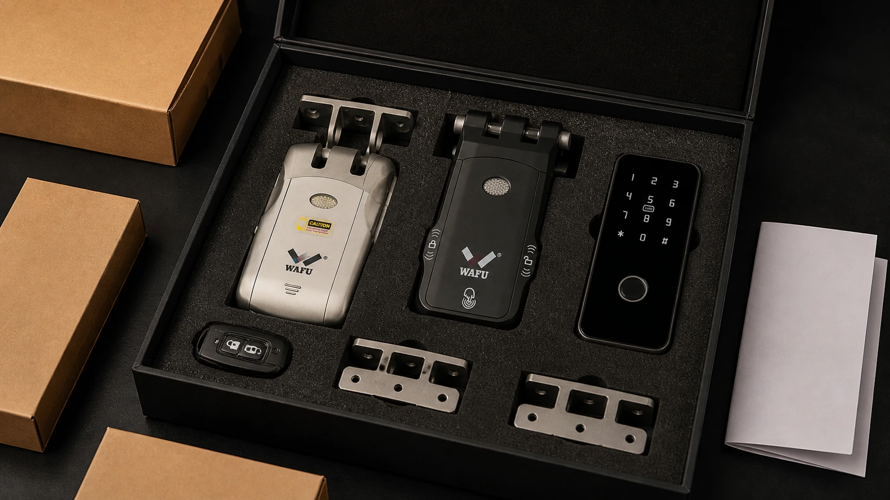

This B2B guide helps distributors turn a first invisible smart-lock order into a repeatable product, installation and after-sales process.
A first order should not attempt to build a complete product line immediately. Confirm the target market, delivery model, representative doors, sample purpose, packaging and support boundary before fixing quantities.

1. A first order is not a complete product line
Start with a small, explainable assortment that can be demonstrated and supported. The order should have a clear purpose: market test, showroom, pilot project or first batch. Mixing all possible models without a sales and service plan creates slow-moving stock and unclear responsibility.
2. Confirm the target market and delivery model
Record the market, door types, expected order size, authorization methods, certification and labeling needs, installation responsibility and delivery timing. A distributor selling through a showroom needs different samples and documents from a project integrator delivering many doors.
3. Organize the SKU mix around three project roles
WF-010 may cover standard concealed-lock discussions; WF-019 may demonstrate appearance and keyless authorization; WF-026 may support projects with higher structural or security requirements. Use representative door conditions and written specifications to decide the quantity of each model, accessories and spare parts.
| Order element | Decision before payment |
|---|---|
| SKU mix | Which customer and door condition each model represents |
| Samples | Which sales, installation and emergency questions they must answer |
| Packaging | Brand, label, language, accessories and replacement parts |
| Support | Installation guide, escalation contact, warranty and RMA boundary |
4. Samples should create reusable sales material
Install a sample on a representative door and record lock number, configuration, firmware, power, app or remote, installation notes and tested emergency path. Photograph the result and turn the confirmed configuration into a product sheet, quotation reference and installer checklist.

5. Prepare packaging, accessories and documents before production
Confirm logo and label files, language, carton marks, manuals, QR codes, accessories, spare parts and packing list before the order is released. If private-label packaging is planned, approve the artwork and version together with the sample rather than after production.
6. Set installation and after-sales boundaries
State who confirms door suitability, who installs, who assigns authorization, who handles emergency opening and who receives the first fault report. Define the warranty, RMA evidence, spare-parts route and change-control contact. These boundaries are part of the product being sold.
7. Ten questions before the first order
- Is the target market and delivery model fixed?
- Does each SKU have a clear customer and door role?
- Have representative doors been sampled?
- Are packaging, labels and manuals approved?
- Are accessories, spare parts and quantities listed?
- Who owns installation and authorization handover?
- What is the emergency opening method?
- What evidence is required for warranty and RMA?
- How are product or firmware changes approved?
- Are lead time, payment, specification and sample approval linked in writing?
Request a project review
Share your door type, target market, quantity and delivery plan. WAFU can help prepare a sample and procurement checklist.
Frequently asked questions
Can a photograph confirm compatibility?
No. Door thickness, edge, existing lock, cut-outs and emergency access must be checked and confirmed with a representative sample.
Should a first order include all three models?
Only when each model has a defined customer, door condition and support plan. A smaller validated assortment is usually easier to sell and service.